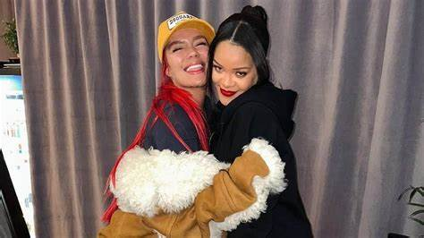

Karol G finalmente conoce a su ídola Rihanna, le enseña jerga colombiana en el Super Bowl 2023
"Este fue el HIGHLIGHT de mi vida entera!!!", dijo Karol tras conocer a su ídola el domingo.
Karol G conoció por fin a su ídola, Rihanna, luego que ésta se presentó en el espectáculo del medio tiempo del Super Bowl 2023 en el State Farm Arena de Glendale, Arizona, el domingo (12 de febrero). “Como fan, tengo que decir que este fue el HIGHLIGHT de mi vida entera!!!” escribió la cantante colombiana en Instagram. “Espero que cuando ustedes conozcan a sus ídolos, ellos sean tan increíbles como ella lo fue conmigo. TE AMO @badgalriri”. La publicación muestra tres fotos de ambas artistas sonriendo y abrazándose fuertemente tras bastidores, además de un video corto de Karol enseñándole la jerga colombiana a Riri. “Hola Riri, ¿cómo estuvo todo?”, Karol le pregunta a la estrella barbadense, a lo que ella responde: “¡Fue una chimba!”. (¡Fue increíble!)
El dulce momento tuvo lugar después de que Rihanna realizó un set de casi 15 minutos en el medio tiempo del SBLVII. Vistiendo un atuendo rojo que abrazaba sus curvas, Riri no solo obsequió a los espectadores un popurrí de algunos de sus mayores éxitos como “Bitch Better Have My Money”, “Umbrella”, “Diamonds”, y “Only Girl”, sino reveló que está embarazada de su segundo bebé. La artista y su pareja, el rapero A$AP Rocky, tuvieron su primer hijo en mayo de 2022. Para Karol, la reunión fue un sueño hecho realidad. En 2018, la cantante de “Provenza” se hizo un tatuaje en el brazo en honor a sus tres cantantes favoritas y principales fuentes de inspiración: Rihanna, Selena Quintanilla y ella misma. Y en múltiples ocasiones expresó que la colaboración de sus sueños siempre ha sido con Rihanna. En 2020, al compartir el arte de un fan con ambas artistas, Karol manifestó que algún día conocería a Rihanna en persona. “Los envidiosos dirán que es Photoshop”, subtituló la foto.